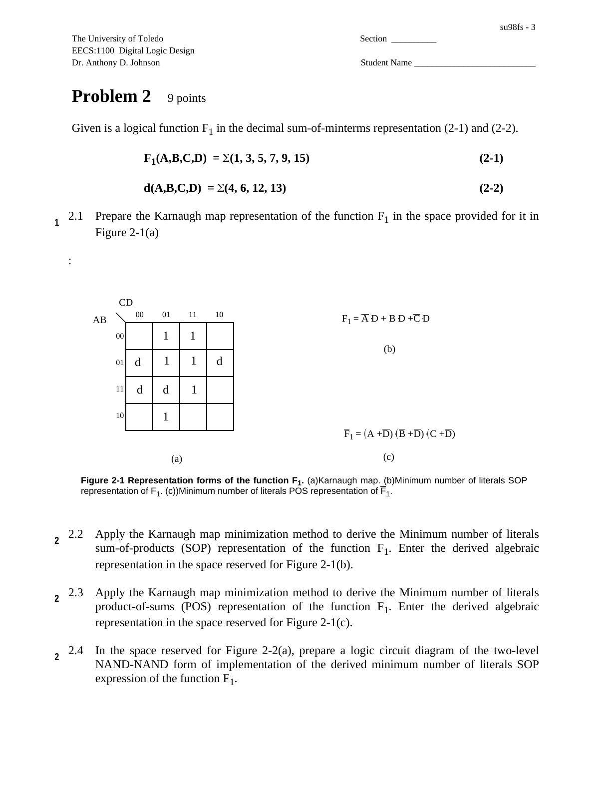
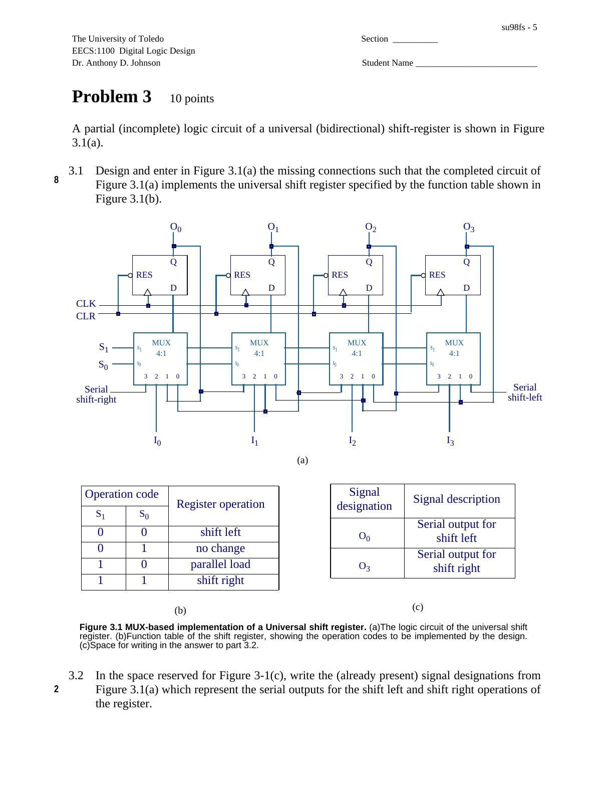
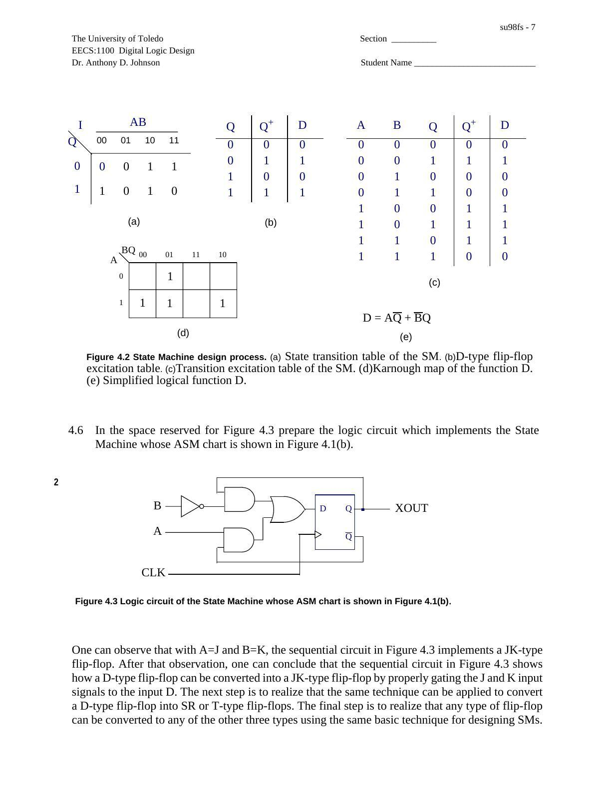

· EEM211
EEM211 Digital Logic Design: Digital Logic Final Exam and Answers (University of Toledo)
EEM211 – Sayısal Mantık Tasarımı · 13.02.1998 · 18.10.2026
A final exam from the University of Toledo EECS:1100 Digital Logic Design course, signed by Dr. Anthony D. Johnson, with solutions worked out on it. The source file is su98fs.pdf; the PDF was created on 13 February 1998 and last modified on 17 January 1999. The seven-page document can be downloaded at the end of the post. The student information fields are left blank.
This content belongs to a third-party source; it is shared for archival and nostalgic purposes with attribution. It will be removed at the request of the rights holder.
1. Number bases and two's complement
The first question asks for the decimal equivalent of three numbers, their eight-bit binary representation, and the binary representation of their negatives. Bits are grouped in fours for readability.
| Number in the source | Decimal equivalent | x, 8 bits | −x, 8 bits |
|---|---|---|---|
| −30 (base 10) | −30 | 1110 0010 | 0001 1110 |
| 134 (base 8) | 92 | 0101 1100 | 1010 0100 |
| −3D (base 16) | −61 | 1100 0011 | 0011 1101 |
The operation x(2)−x(1) is performed using only an adder: 92−(−30)=122. The binary operation 0101 1100 + 0001 1110 gives 0111 1010. The solutions were checked against their decimal equivalents.
2. Karnaugh map and two-level implementation
The given function is F1(A,B,C,D)=Σ(1,3,5,7,9,15), with don't-care conditions d(A,B,C,D)=Σ(4,6,12,13). The student is asked to fill in the map, derive the minimum-literal sum-of-products and product-of-sums expressions, and draw the NAND–NAND and NOR–NOR circuits.
The source answer gives F1=A′D+BD+C′D. The product-form expression is for the complement function: F1′=(A+D′)(B′+D′)(C+D′). The overbars were transcribed as ′ marks when converting to text. The results were verified against the six given minterms and six required zeros.

3. Universal bidirectional shift register
Four D flip-flops are used, with a 4:1 MUX in front of each flip-flop. The student is asked to complete the missing connections so that the following operation table is satisfied.
| S1 | S0 | Operation |
|---|---|---|
| 0 | 0 | Shift left |
| 0 | 1 | Hold state |
| 1 | 0 | Parallel load |
| 1 | 1 | Shift right |
In the drawing, the serial output of the left shift is given as O0 and the serial output of the right shift as O3. I0–I3 are the parallel inputs; CLK and CLR are common control lines.

4. Moore state machine and flip-flop conversion
The machine, with inputs A and B, is implemented with a positive-edge-triggered D flip-flop. The transition table, the D excitation table, the transition-excitation table, and the Karnaugh map are derived from the ASM chart.
| Present Q | AB=00 | AB=01 | AB=10 | AB=11 |
|---|---|---|---|---|
| 0 | 0 | 0 | 1 | 1 |
| 1 | 1 | 0 | 1 | 0 |
The values in the table are the next-state Q⁺ values. The D input equation is D=AQ′+B′Q, and the output is XOUT=Q. If A=J and B=K are taken, the circuit exhibits JK flip-flop behavior. It is noted that, with the same state machine design method, conversion between other flip-flop types is possible.
